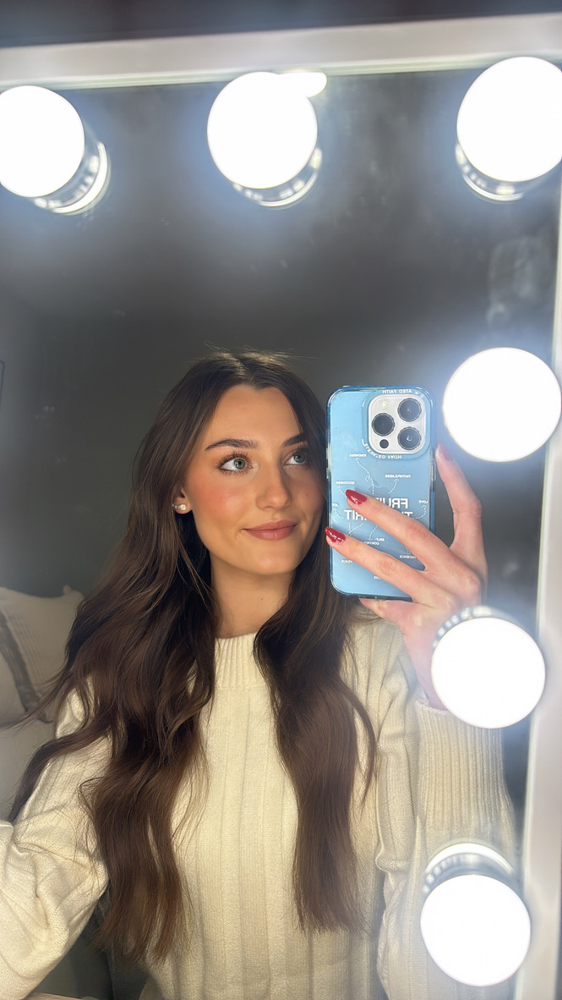

Glow Up! Makeup Blog
Your source for beauty tips, tricks, and trends.
Your source for beauty tips, tricks, and trends.

Welcome to Glow Up! Makeup Blog, your ultimate destination for beauty inspiration. My mission is to empower individuals to feel confident and beautiful by sharing my makeup tips, product reviews, and tutorials.
I have been in love with makeup since before I can remember; sneaking into my mom's bathroom and stealing her eye shadow pallette's to create a look that I thought at the time was pretty amazing. Growing up, my love for makeup took off. I saw it as an outlet where I could express my creativity every day. A big myth that I intend to intend to debunk with this blog is that we wear makeup for others, so others can think we look beautiful. False. We wear makeup because it makes us feel better. It gives us a way to feel confident in our skin on those days where your skin does not want to agree. We do not do it for anyone but ourselves. That is the goal I intend to achieve with this blog. And if i can provide you with even more ways to make you feel confident in your skin, then I have achieved my goal!
I believe in celebrating individuality and promoting self-expression through the art of makeup.
Join me as I explore the latest trends, discover must-have products, and share tips to enhance your beauty routine. Let's Glow Up together!
